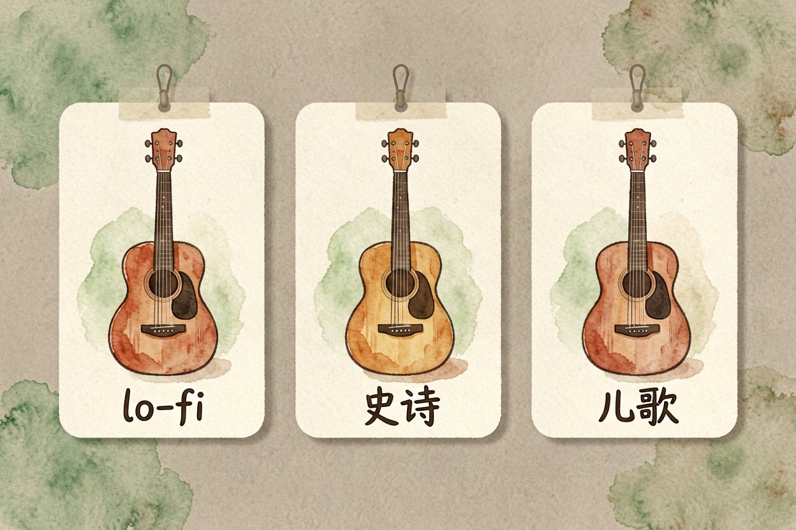
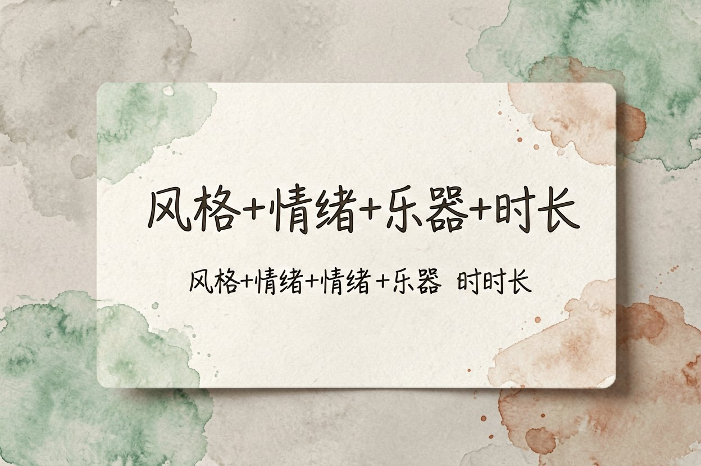
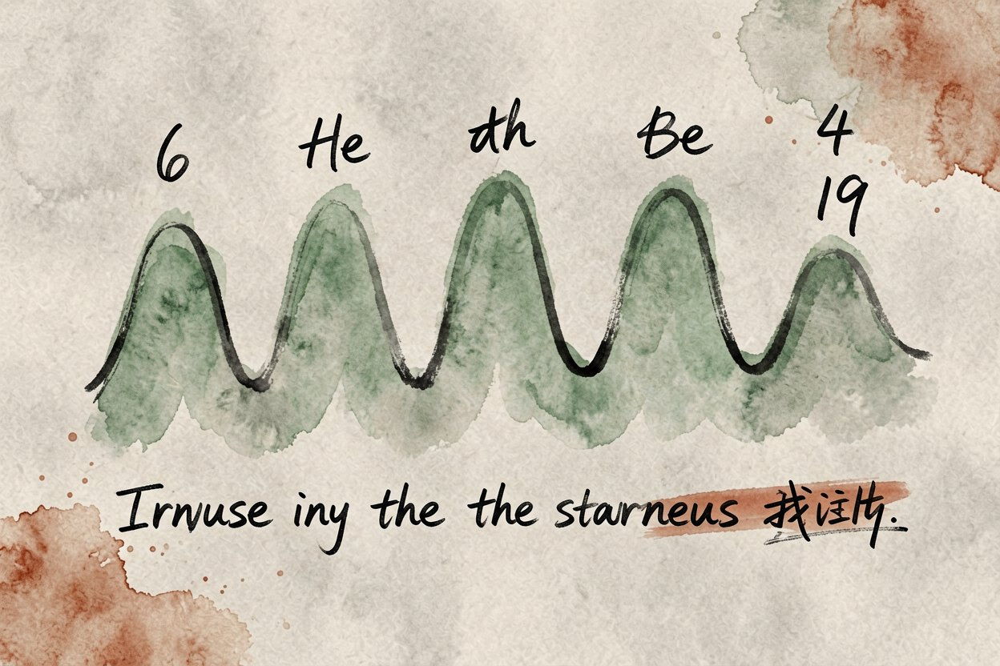

AI 音乐生成教程：用 Suno 做一首自己的歌
不会乐理也想写首歌？用 AI 音乐生成，写一句风格描述，几十秒就能拿到一段能听的旋律。
AI 音乐生成是本文的核心主题，下面详细介绍如何使用。
AI 音乐生成是什么：写一句话出一首歌

AI 音乐生成，就是输入风格或一段参考，模型直接产出带旋律、编曲和人声的音频。你不用会五线谱，也不用碰乐器，描述清楚想要什么感觉就行。它和AI 背景音乐制作是近亲，区别在前者从零写歌，后者偏配乐。
这类工具分两种。文生音乐靠文字想象情绪和编配，最适合从零起步。参考生音乐拿一段旋律当种子，让成品更像你脑子里那首。新手先用文生音乐找手感，熟悉后再玩参考生音乐做续写。
动手前先定风格和用途

先想清楚这首歌给谁听、用在哪。做视频 BGM 要 instrumental 不抢人声，做个人单曲可以开人声填词。风格词越具体越好，写「安静的」不如写「深夜 lo-fi 吉他」。风格定准，生成结果才不跑偏。
时长也先定。短视频配乐三十到六十秒，完整歌一两分钟。新手先短后长，生成快、改起来不累。先把一段三十秒的 loop 做顺，再想怎么拉长成歌，比一上来写两分钟稳。
用 Suno 做第一首歌

打开 Suno，选「用文字创作」，把风格、情绪、乐器、时长写进一行提示词。中文描述大多数情况够用，不用硬凑英文。想加人声就写「男声」或「女声」，做纯音乐就标 instrumental。
Suno 提示词示例：
轻松的 lo-fi 节拍，吉他扫弦，适合深夜学习背景乐，
Instrumental，时长 90 秒，情绪安静不吵。生成后试听，旋律顺、不跑调就保留。不满意改风格词重生成，别在同一版上反复刷。同一提示词出两版，挑结构更完整的那版继续改，比死磕一版省心。
歌词和旋律怎么改得更顺
Suno 支持自定义歌词，按「主歌、副歌、桥段」分段写，比让它自由发挥更可控。旋律别扭的地方，改一两个形容词再生成，往往就顺了。人声发音怪的词换掉，模型读中文偶尔会咬字不清，尤其是生僻字和多音字。
想更贴某首参考，上传一段旋律当种子，让它在骨架上长。和AI 播客制作一样，先有脚本再配乐，整体更协调。歌词先写好再生成，比边生成边想词高效，也更容易踩中节奏。
关于AI 音乐生成，人声克隆和翻唱涉及肖像与录音权，别拿别人声音乱用。AI 音乐生成是创作助力不是替身，好歌仍靠你的品味把关。旋律撞歌是常见问题，发布前自己听一遍相似曲库。别把生成结果直接当成品发，过一遍耳再上线更稳妥。
AI 音乐生成的最佳实践见上文详细步骤，别错过核心要点。
本文信息核对于 2026-08-24。AI 产品的价格、免费额度与功能变动频繁，实际以各工具官网当前说明为准。